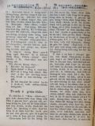
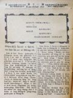

Languages
台文
｜
中文
｜
日本語
｜
English
字體
小
｜
中
｜
大
首頁
/
白話字數位典藏
白話字數位典藏全文檢索
查詢模式
選擇年代
清國時代(1885-1895)
日本時代(1895-1945)
戰後(1945-1969)
1885-1895
1896-1905
1906-1915
1916-1925
1926-1935
1936-1945
1946-1955
1956-1965
1966-1969
1970-1980
1980-1990
1990-2000
2000-2010
2010-
選擇文類
詩
散文
小說
戲劇
傳記
選擇作者
陳清忠
陳清義
編輯部
柯設偕
吳天命
明有德
偕叡廉
周天來
劉華義
王守勇
林茂生
陳添旺
王占魁
柯維思
賴仁聲
陳瓊琚
雪峰逸嵐
吳清鎰
郭水龍
蕭樂善
許水露
葉金木
陳金然
章王由
廖得
鄭連坤
潘道榮
楊士養
梁秀德
劉約翰
周淑慧
高金聲
林燕臣
黃六點
蔡愛義
許有才
主筆
巴克禮
陳鳩水
郭朝成
張基全
陳明清
陳能通
拾穗生
顏振聲
卓恆利
傳道局
胡文池
劉主安
鄭兒玉
蔡安定
柯撒該
邱天保
張金波
Google Search
Yahoo Search
全部
刊名
標題
標題(教羅)
全文
全文(教羅)
作者
第98頁，共108頁(共2,148筆資料) 0.65898323059082sec
1
...
96
97
98
99
100
...
108
To Page
GO
文字列表
圖文列表
排序
日期
文類
刊名
作者
影像
[1926-9 芥菜子 文類-散文 作者-雪峰逸嵐/Soat-hong Iat-lâm]
(2)
好歹境遇攏有利益 [ Hó-pháiⁿ kéng-gū Lóng ū lī-ek ]
好歹境遇攏有利益 佇美國起頭欲傳道佇食人島的時，是真為難，因為所有去到遐的宣教師，攏無性命通閣倒轉--來，是予遐的青蕃thâi去食；有一个少年人，奮志決心欲傳教佇彼个海嶼，就出力勉強入神學。佇欲卒業神學的一年前，有一日，為著坐電車無拄好，致到兩枝跤攏去予電車kauh-chi̍h--去。可憐這个強壯的青年，一旦變破相無跤的人，伊的親戚朋友替伊真毋甘；總是青年人的心，家己真安慰，佇病床--裡，猶原teh勉強伊的課程，後來傷好，就鬥樹奶跤入學校。到卒業試驗，猶原第一名，親戚朋友真呵咾，也勸伊莫得去食人島傳教，著去別位。總是伊毋聽，講已經佮上帝約束 lah，伊對宣道會討欲去，會--裡的人看著伊的熱...
[1926-9 芥菜子 文類-散文 作者-陳清忠/Tân Chheng-tiong ]
(2)
本身 [ Pún- sin ]
本身 咱袂得通信用本身傷過頭，因為咱較常有欠缺濟濟的美德，閣再無十分知識家己的因端。 咱的知識本身是到極小可，尚且對佇咱的貧惰隨時失落袂記得。 咱常常，猶原毋知咱家己心內的青盲到偌傷重。 咱時常做歹家己來赦免。咱有時對佇感情來振動，也想做是熱心。 咱嫌別人佇小可的事，家己的大事放予伊過去。 咱對別人受著的苦痛隨時感著，也想是傷重；總是予人的艱苦攏放做袂要緊。 咱所做的事業欲照起工閣斟酌來想，但是判斷別人的事業攏袂出--得。 叫做真實的基督徒--的，猶未想別人的代先，是較愛省察家己。 Kut力閣gâu省察本身的人，快快會守恬靜關係佇別人的行為。 若毋是會守沉默佇...
[1926-9 芥菜子 文類-散文 作者-陳清忠/Tân Chheng-tiong ]
(2)
名人的祈禱 [ Bêng-jîn ê kî-tó ]
名人的祈禱 (IV) J.Norden (1548－1625) 善良的爸ah，我逐日求揣你，你逐日顯現佇我；我若求你，無論佇啥物時，我會看著你，－無論佇家內，無論佇野外，佇神殿抑是佇街路是按呢。我無論欲做啥物，你佮我saⁿ-kap佇teh；無論佇lim食的時，giâ筆抑是做工的時，騎馬抑是讀冊的時，默想抑是祈禱的時，你不時佮我saⁿ-kap佇teh，我無論佇啥物所在，做啥物事，我時常感著你的恩愛。我若受壓迫的時，你替我持防；人若怨恨我，你保護我；我若腹肚枵，你養飼我；我所祈願的，無論啥物，你賞賜我。Ah，求你永遠賞賜這个恩愛予我，通予通世間的人來知識你所保護我的氣力，你的恩...
[1926-10 芥菜子 文類-散文 作者-陳清義/Tân Chheng-gī]
(2)
研究耶穌的祈禱會捌耶穌是上帝 [ Gián-kiù Iâ-so͘ ê kî-tó oē bat Iâ-so͘ sī Siōng-tè ]
研究耶穌的祈禱會捌耶穌是上帝。 論世間人捌耶穌，無攏siāng款：-有的捌伊是人；有的捌伊是神；有的捌伊毋是人也毋是神，是摩西的模型。 捌伊是人毋是神的，是明明講伊是約翰的囝nā-tiāⁿ，毋是上帝的獨生囝。這个是研究無真，佮對無著方面來看，所以講按呢。譬喻人愛研究觀音山，若對坪頂彼方面來看，穩當是講kē-kē無秀氣；若對淡水彼方面來看，穩當會講真?，真懸真好看。人看耶穌猶原是按呢；若kan-ta看耶穌對馬利亞來生，猶原著穿衫，著食奶，猶原漸漸大漢，猶原有做工有lim食，無愛研究別款，自然看伊時人。 若對祈禱彼方面來研究，毋但看伊是人nā-tiāⁿ，著信伊是上帝。論耶穌的祈禱，敢毋是佮...
[1926-10 芥菜子 文類-散文 作者-蕭樂善/Siau Lo̍k-siān]
(3)
著怎樣 [ Tio̍h cháiⁿ-iún ]
著怎樣？ 「以法連親像燒餅無péng」；Hose 7：8。 基督徒的生活有兩面：表面生活佮內面的生活。前的就是守禮拜赴集會，後的，就是家己生活的款式，個人抑是家庭的生活。這兩項攏是要緊，毋通一爿發達到傷過頭，也一面攏無發達。著平平進步；若無就是親像人teh燒餅無péng。燒餅若無péng： (1)、一爿無熟：以法連看是可取，毋kú上帝不止受氣in：因為in小部分的順趁排佇門口，也違逆，反抗滿滿佇in 的厝後。濟濟人信主久久；但是佇成聖生活iáu-kú青青。啥物因端按呢？因為無實在得著上帝的恩典。這个恩典就是力。你若果然得著恩典，就會感著大的氣力teh幫贊你。對按呢你的所想所講，所行大大...
[1926-10 芥菜子 文類-散文 作者-蔡安定/Chhoà An-tēng]
(1)
聖冊 [ Sèng-chheh ]
聖冊。 I、詩人佮聖冊。 佇世間無有一本冊比聖冊較奇怪，kan-ta對文藝彼爿共伊看起來，也無半本佮伊會比對得。這是歐美的文學者佮詩人所證明--的。詩人コリンス到老的時有放sak一般的研究，逐擺攏是kan-ta 帶一本新約出外旅行。 II、文士佮聖冊。 早時佇法國一个反對基督教的讀冊人，佇伊的桌屜仔內揣著幾若張毋捌冊名佮彼个著者的斷片。伊本身 tú-tú是親像別的反對者攏是攻擊聖經，所以家己也攏毋捌讀。伊所揣出的紙片所印的就是Khap-pa-kok 的祈禱。 III、食人島的人佮聖冊。 早前是人所驚畏的食人種族，現時有得著基督教的感化，所以in 的性質攏變換了了，做一个成做溫和，...
[1926-10 芥菜子 文類-散文 作者-柯撒該/Koa Sat-kai]
(2)
耶穌佮撒該 [ Iâ-so͘ kap Sat-kai ]
耶穌佮撒該。 「因為人子到，是欲揣失落的人，來kuì--伊」。 (路加19：10) I、Teh 揣的罪人。(撒該) 1、撒該有要求的心神。 2、撒該有真實的元氣。 3、撒該有熱望的精神。 4、撒該有實行的信仰。 II、Teh 揣的救主(耶穌) 1、耶穌來揣撒該。 2、耶穌叫撒該。 3、耶穌佮撒該做陣。 4、耶穌堅固撒該的信。 III、撒該信耶穌，有四个時期。 1、好奇心。(3節) 2、深信。(5，6節) 3、反悔。(9節) 4、奉獻。(8節) IV、耶穌救撒該，有兩名稱。 1、耶穌做人客。(7節) 2、耶穌是救主(9節) 「耶穌拯救撒該！」這个予咱做...
[1926-10 芥菜子 文類-散文 作者-劉約翰/Lâu Iok-hān]
(3)
人生的目的 [ Jîn-seng ê bo̍k-tek ]
人生的目的。 人活佇世間，逐人的確著有一定的目的。有目的，然後才有人生的快樂。 總是人的心無相同，所以人生的目的也無相同-有的圖名，有的好利，有的苦心研究學問，也有的費盡一生的氣力去做伊所愛的事業。但是名利、學問、事業，攏是一款ná有ná無的物；因為遮个攏毋是咱人生的欠缺，也毋是咱人生真正的目的。咱人生真正的目的到底是啥物，對耶穌基督的真理來，通看出有5大項的要緊：- I、認識上帝。 人是有宗教性質的動物，對有歷史以來，無論佗一國度，佗一民族，文明到愚蠢；無有毋知佇一个宇宙中有一个偉大的靈體。中國古早是做文化第一盛的國，對佇上帝的觀念也是真懇切。孔子講「敬鬼神而遠之」，這雖然是對伊驚...
[1926-10 芥菜子 文類-散文 作者-陳清忠/Tân Chheng-tiong ]
(3)
抵抗誘惑 [ Tí-khòng iú-he̍k ]
抵抗誘惑 咱人活佇這地上的中間，咱袂免得無試煉佮誘惑。 照約伯記內面所記，「人佇地上的生活酒惑的生活。」 所以逐人應該著警戒佇伊的誘惑，謹慎來祈禱，免得魔鬼利用機會來欺騙--伊；因為魔鬼無暝無日，四界揣所欲吞咬的人。 無人遐完全，遐神聖，通免受誘惑，免受魔鬼的攻擊。 雖然誘惑oh抵抗，尚且是悲慘，iáu-kú伊的利益是真大；因為人對誘惑會成謙遜，成清氣，閣再會得受訓練。 濟濟聖徒經過濟濟的試煉佮誘惑，來得著濟濟的利益。 袂堪得受誘惑的人，teh欲跋落佇自暴自棄的陷坑。 世間無有一所在夠額神聖通閃避誘惑佮逆境的襲擊，嘛無彼款的 ún-ka通bih。 有活命的中間無一人免受誘惑...
[1926-10 芥菜子 文類-散文 作者-陳清義/Tân Chheng-gī]
(2)
世界第一 [ Sè-kài tē-it ]
世界第一 (對新聞翻譯) 1、世界第一長的鐵路是佇美國，有二十四萬五千里的遠。 2、世界第一大的火山是佇墨西哥的國，懸有一萬七千七百四十八尺，出火的口三里，深一千四百尺。 3、世界第一大的戲台是佇法國的首府巴黎，總面積有四百二十六萬四千的平方尺。 4、世界第一大的吊橋是佇美國，長約有五千七百八十尺。 5、世界第一長的磅空是佇意大利國，長有九里半，空口闊二十八尺，懸有十六尺。 6、世界第一長的地下鐵路是佇英國的首府倫敦，有二十一哩半的英哩。...
[1926-10 芥菜子 文類-散文 作者--/-]
(2)
Kho-lé-lah。コレラ [ Kho-lé-lah.コレラ ]
Kho-lé-lah。コレラ 前月來佇台北、桃園、海山郡，有發 kho-lé-lah；對按呢別位也紲漸 teh發。文山郡下景尾、內湖也發生，有三名死；佇這兩位佮隔壁莊新店防疫真嚴重，召全郡下的巡查，台北南北署，練習所的巡查來，佮本地的壯丁佇發生的所在顧真嚴，暝日chhiāng-chhiāng滾。遮嚴重，是因為這號是真危險的症，閣再北百川宮toā-hui 殿下這月尾欲來台灣，愛趕緊拍滅，逐日健康調查，百姓預防注射，半暝叫門消毒便所；溪裡禁止洗盪，掠魚，逐日所欲食用的水佮洗菜，用消毒藥水(クロールカルキ)一錢和五石水。發生這號病，防疫的人佮百姓真艱苦，較戇的百姓聽人哮東西，紲逃走去別位。 這...
[1926-11 芥菜子 文類-散文 作者-陳清義/Tân Chheng-gī]
(2)
研究耶穌的神跡會捌耶穌是上帝 [ Gián-kiù Iâ-so͘ ê sîn-jiah oē bat Iâ-so͘ sī Siōng-tè ]
研究耶穌的神跡 會捌耶穌是上帝 耶穌佇世間的時，毋但四界傳道理，也行濟濟神跡。伊所行的神跡，毋是親像奇術家的款，予人看心適，攏是用道德做目的，來叫醒眾人，予伊就近上帝，也通講是替上帝來宣教：閣顯明有上帝的權佇teh。按呢通知耶穌原本是上帝，今對伊所行的神跡來研究，看伊有顯出啥物權親像上帝。 1、 有顯出宰治天地的權親像上帝。看伊佇加利利海，予風湧恬靜的事就知影，伊若無宰治天地的權風佮湧穩當毋順伊。既然會順伊，咱通捌伊是上帝。 2、 有顯出管轄萬物的權親像上帝。看伊佇底加波利用5个餅2 尾魚予5千人食到飽，閣佇加納用水變做酒，這層事，就知伊有管轄萬物的權，親像上帝，予...
[1926-11 芥菜子 文類-散文 作者-陳清忠/Tân Chheng-tiong ]
(4)
聽候主閣來 [ Thèng-hāu Chú koh lâi ]
聽候主閣來。 基督教信仰的基礎是真單純，親像囡仔款，若將教理抑是神學上的裝飾共伊提開，就按呢提出佇理智抑是常識的面前來看，實在是親像一款的神話，抑是一款的故事而已。 佮上帝saⁿ-kap佇teh，尚且有份佇創造萬有的耶穌，來化做人，來成人的聖，人的肉；伊做一个平常的人，行佇湖邊，食麵包；後來流血，死了三日復活，四十日就上天；後來欲閣來。信者忍受萬項的艱苦，teh向望伊閣來；所以世間的學者，有智識的人teh袂了解，算是無奇怪的事。 若是將基督的昇天佮再臨，想做是kan-ta 的形容，抑是夢想；教會隨時失力，信者就tuh-bîn，佇遐就加添地上佮肉體的向望。 若是將這个信做親像加利利討海...
[1926-11 芥菜子 文類-散文 作者-明有德/Bêng Iú-tek]
(1)
「至好朋友就是耶穌」的作者 [ “Chì hó pêng-iú chiū-sī Iâ-so͘” ê chok-chiá ]
「至好朋友就是耶穌」的作者。 Joseph Serven(Seriven) (1820－1906)出世佇英國的愛爾蘭島。(Irelangd)伊少年的時有徙去加拿大，安大略的所在徛起。伊是蹛佇庄裡，離城差不多六、七十英哩。伊的厝是起佇一个細細種花佮種菜的園內，是細細間。佇遐有飼蜜蜂。伊常常挽伊的花佮菜來分厝邊；伊所得著的蜜猶原按呢來分予--in。 厝邊真疼--伊。逐擺看見伊到佇in 的門口的時，逐人真歡喜。 到較計濟歲的時，有拄著破病，袂會去探厝邊。所以有一个厝邊來看--伊，來照顧--伊。彼个厝邊坐佇伊的床邊的時，看見佇桌頂有一本舊舊的簿仔，就共伊提起來看。佇彼內面有寫，講－ ...
[1926-11 芥菜子 文類-散文 作者-陳清忠/Tân Chheng-tiong ]
(2)
人生的五不足 [ Jîn-seng ê Ngó͘-put-chiok ]
人生的五不足 古早有一个學者叫做皆川淇園，伊有按呢講：－ 1、 「衣服。」啥物因端人著穿衫？是因為欲持防寒熱的緣故。若是按呢予身軀袂寒，予身軀袂熱彼款素素的衫，人應該著滿足才著。愛穿媠的衫是因為寒熱猶未入身軀的證據。寒熱若入身軀，就thǹg pak-theh 抑是捲草蓆也無嫌。 2、 「食物。」人怎樣著食？是因為欲充滿空腹的緣故。若是按呢毋免山珍海味著會做得才著。Teh講，－ 「無好mih-phè，食袂落」 的中間，通知伊的腹肚猶未枵。實在腹肚若枵，就米糠嘛無嫌。 3、 「家屋。」人怎樣著起厝？是因為愛預防雨露的緣故。若是按呢，高廈大閣毋免徛會做得。為著火災-害來失落厝的時，就...
[1926-11 芥菜子 文類-散文 作者-邱天保/Khu Thian-pó]
(2)
重頭生 [ Têng-thâu siⁿ ]
重頭生。 耶穌共尼哥底某講，「人若無重頭生袂入上帝的國」。(約翰3：3)耶穌講一句「重頭生」尼哥底某袂明白，講「人已經老欲thái 會閣入老母的腹肚來重出世？」總是耶穌所講這句，毋是指肉體的，是指心神的重頭生。 今人愛得著心神的重頭生著愛幾若項，記佇下面予大家做參考： 1、 著反悔罪。 耶穌講「時到lah，上帝的國近lah；著反悔來信福音」。（馬可1：15)。耶穌起頭出來傳道理的時，頭一步就是叫人著代先反悔。按呢通知人欲重頭生著愛知罪來反悔改變。親像撒該是抽餉的人，猶太人看伊是第一重罪的人。伊佇耶穌的面前有知家己的罪來反悔。所以耶穌共伊算做是重頭生的人。 2、 心神換新...
[1926-11 芥菜子 文類-散文 作者-張金波/Tiuⁿ Kim-pho]
(2)
媽祖飛行 [ Má-chó͘ hui-hêng ]
媽祖飛行。 四年前日日新報記載佇猴洞驛附近「美人飛行」。我看了奇怪teh想ná有美國人踮遐飛行，到讀一遍了，就知是一个少年的婦人人，teh過a-iân-soàⁿ 橋，到橋中，忽然佇對面有土炭車緊緊teh來，真危險無地閃，不得已跳落橋跤；佳哉手kia̍h雨傘，所以慢慢墮落兩丈深的橋跤無傷害；才號做「美人飛行」。 今年六月八日媽祖也佇遮飛行！這條橋佇猴洞停車場幾若百步，goân-chiân是做炭礦的路用，近來改做百姓交通的 橋。總是這條橋舊舊無穩當，就對別位閣造新的鐵橋。佇六月八日欲開通式，大家欲做鬧熱，就議定順這个機會來迎媽祖，向望會較鬧熱。彼日迎媽祖猶原對舊的橋經過，這條橋長...

[1926-11 芥菜子 文類-散文 作者-雪峰逸嵐/Soat-hong Iat-lâm]
(2)
智識的源頭 [ Tì-sek ê goân-thâu ]
智識的源頭 佇這號的 「芥菜子，」我欲專門佮同屬主的囡仔兄，囡仔姐，saⁿ-kap講話，恁若袂曉看，叫恁阿娘，阿姐，讀予恁聽，恁穩當會真歡喜。我也是真歡喜，因為我也捌做囡仔，我也有囡仔所以真愛佮囡仔講話。 這馬欲共恁講智識對佗位來，敢毋是真要緊的物？咱攏無愛戇攏真愛智識，有囡仔共我講「我真頇慢，袂曉讀冊，因為無智識，讀袂會，別日會做無路用的人，所以真煩惱。」通知「智識」是真要緊著毋？今智識的源頭是對佗位來？我報恁讀「敬畏耶和華是智識的根本」(箴言 1：7。) 「有人智識無夠，著求上帝，上帝gâu予人」(雅各1：5)。今我欲講一篇故事，來證明這兩句予恁明白。 有一个14 ...
[1926-11 芥菜子 文類-散文 作者-郭水龍/Keh Chuí-lêng]
(2)
馬偕醫院近訊 [ Má-kai i-īⁿ kūn-sìn ]
馬偕醫院近訊 這間病院的主旨全是救世的主義，規模雖然細細，實在佇台灣是無通比的好，內容設備逐項真次序，衛生真完全，用刀真經濟，人員真充足。戴博士、陸醫生、吳醫生，洪先生、西洋看護婦 4名本島看護婦 17名全病院人員共42名，現時病室有46張的眠床，閣teh起一棟小兒科的病室，眠床6張無外久會完工。 這个病院所設的法度真濟項是新思潮，理想tek佮別間病院無siâng款，有人看做奇怪紲嫌，照我看有真濟項的特色所以寫幾項說明予各位較諒解。 1、 救治thái-ko：這號病空前無醫藥無救治的法度，不幸染著thái-ko就絕望聽候死，現時來就醫thái-ko患者有117名。萬國thái...

[1926-12 芥菜子 文類-散文 作者-陳清義/Tân Chheng-gī]
(2)
研究耶穌的教示，會捌耶穌是上帝 [ Gián-kiù Iâ-so͘ ê kà-sī, oē bat Iâ-so͘ sī Siōng-tè ]
研究耶穌的教示，會捌耶穌是上帝。 咱愛捌耶穌原本是上帝毋但對研究伊的祈禱，伊所行的神跡，就對伊的教示這方面來研究，也會捌伊。伊三年久，周圍四方，傳道教示人，佮經學士的教示攏無相同。有一擺佇迦百農會堂教示人，聽的人大奇怪，因為聽伊的教示有大權佇teh，無親像經學士用摩西的律法教示人，專專愛諂媚人予人歡喜；看見人有過失，毋敢干證--伊。耶穌的教示毋是按呢，勇敢直講，權柄顯現。對按呢來看予人通知伊的權是佮上帝平等，原本是上帝。 論耶穌的教示有上帝的權佮有上帝的口氣，愛排列幾若款佇下底：－ 1、耶穌講，「凡若著磨艱苦pē重擔的，著就近我，我賞賜恁平安」。閣講「人喙焦著就近我lim...
第98頁，共108頁(共2,148筆資料)
1
...
96
97
98
99
100
...
108
To Page
GO
數位典藏國家型科技計劃
拓展台灣數位典藏計畫
版權所有 國立台灣師範大學 台灣文化及語言文學研究所©2008
10610 台北市和平東路一段162號│TEL 02-7734-5516│Fax 02-2358-2461
計劃簡介
典藏特色
執行架構
計畫典藏數位化流程
成員介紹
台灣白話字發展簡介
巴克禮牧師與《台灣教會公報》
廈門話字典-杜嘉德
白話字教學-打馬字
中國南方白話字發展
台灣基督教長老教會簡表
台灣基督教長老教會教會歷史委員會
《北部台灣基督長老教會教會ê歷史》
關於陳清忠
白話字文學：台灣文學的早春